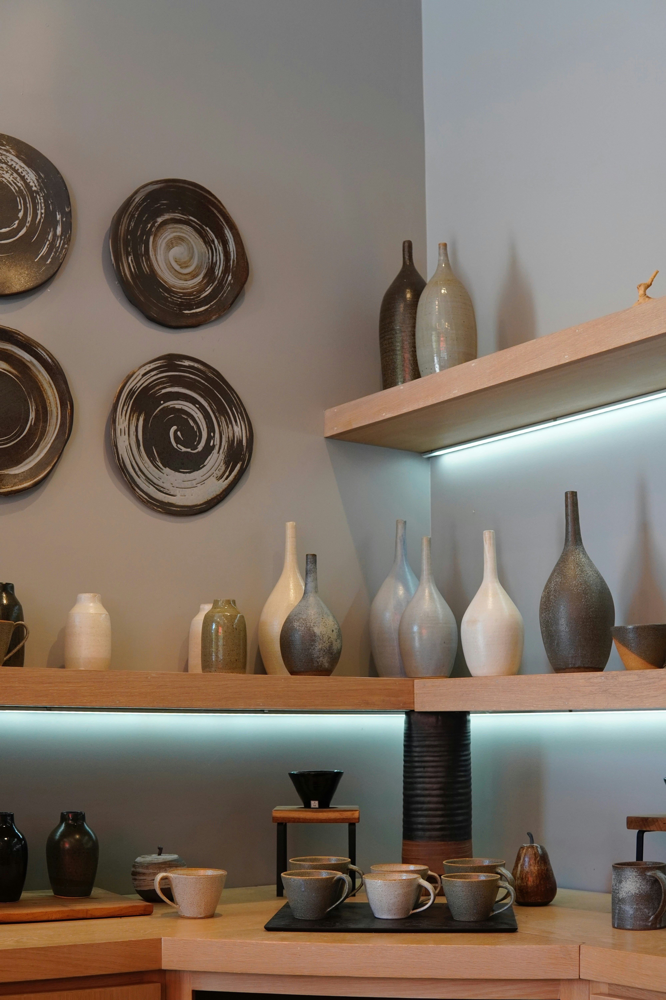
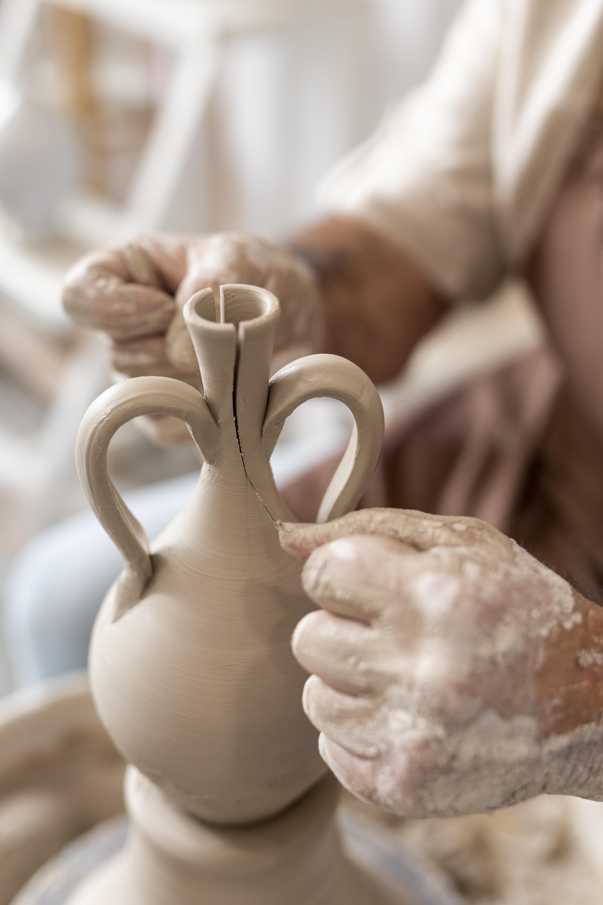
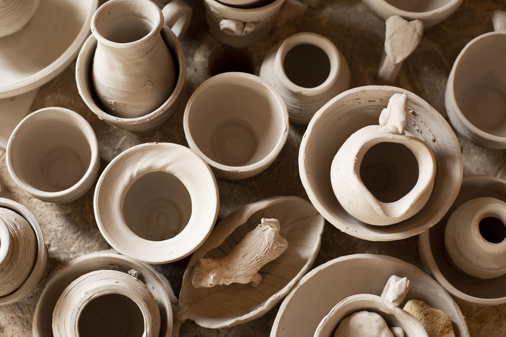
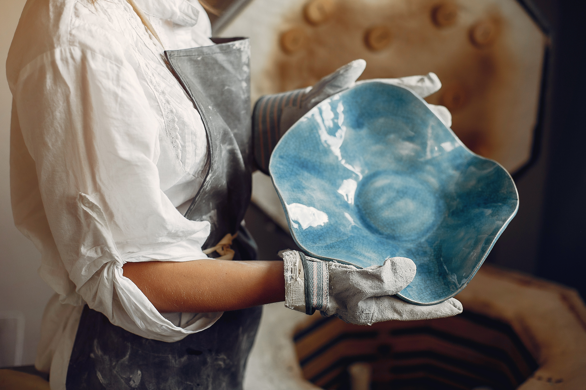
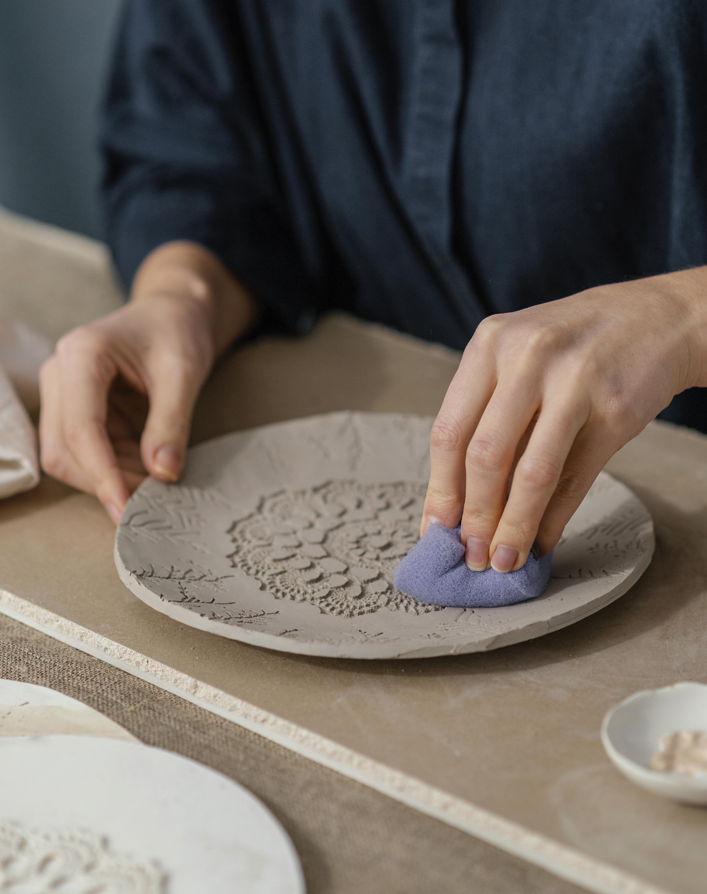
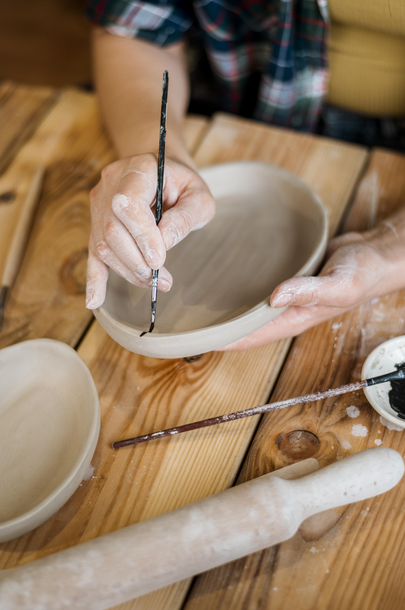
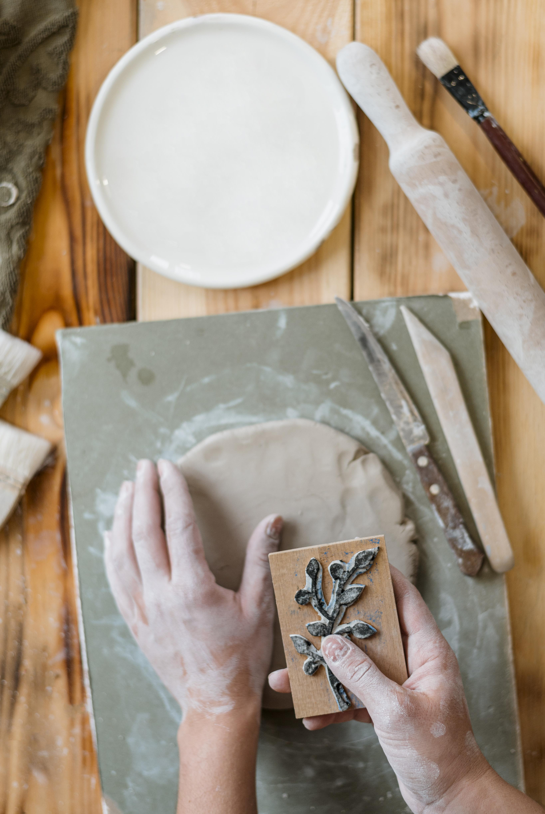
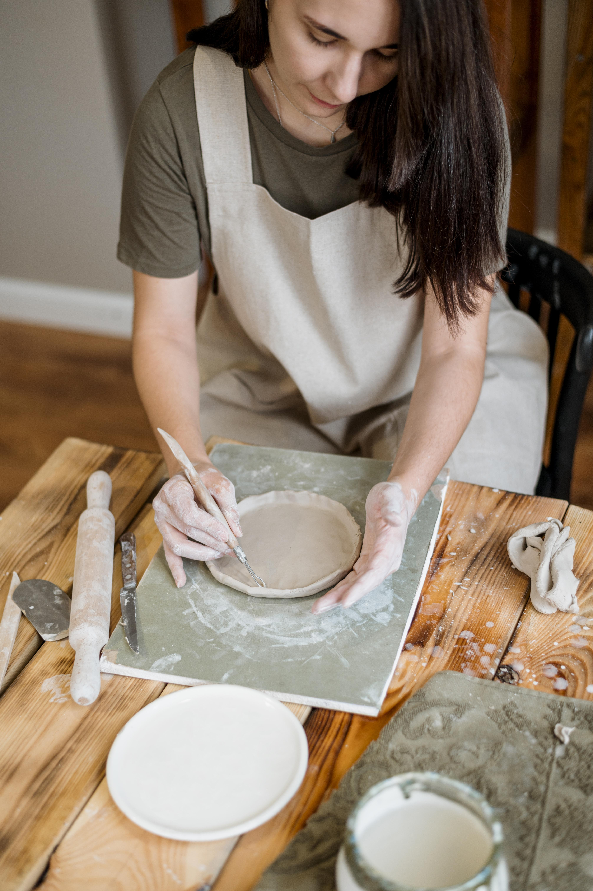
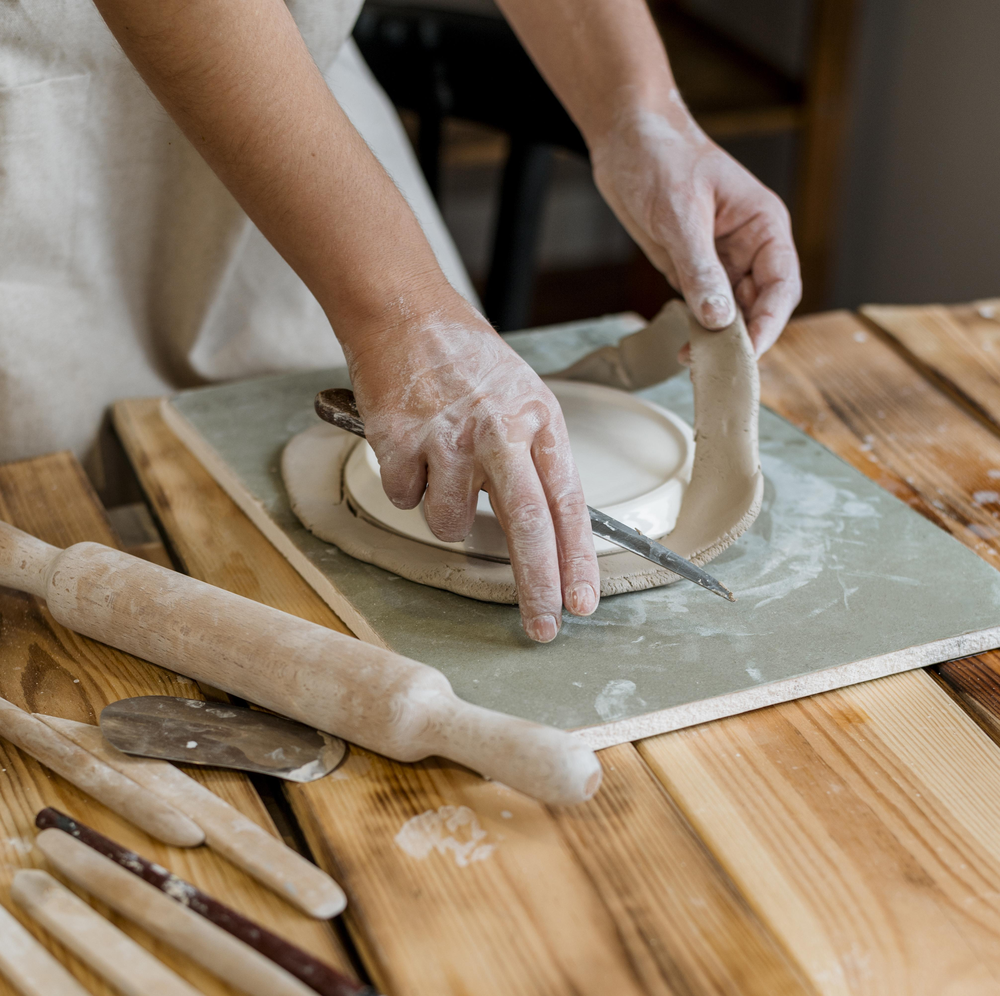
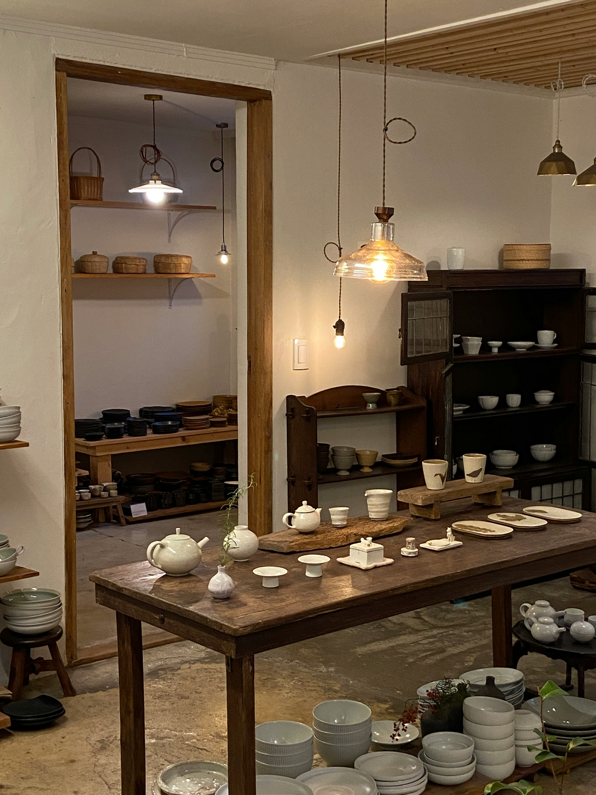

Nuestra historia
Empezamos con
las manos en la tierra
Barro & Fuego nació de una decisión simple: volver a lo esencial. Lo que empezó como una exploración personal en un pequeño taller de Buenos Aires se fue convirtiendo, poco a poco, en un oficio de verdad.
Aprendimos a escuchar la arcilla. A entender que cada material tiene su propio tiempo, su propio ritmo. Que el fuego del horno no destruye — transforma. Y que en esa transformación está la razón por la que seguimos haciendo esto.
Decidimos arrancar porque creemos que los objetos cotidianos merecen ser hermosos. Que una taza con la que empezás el día puede ser, también, una pequeña obra. Que lo artesanal no es un lujo — es una elección consciente.
Paso a paso
Cómo nace una pieza
01
Selección y amasado
Todo empieza eligiendo la arcilla correcta según la pieza que queremos hacer. La amasamos a mano para eliminar burbujas de aire y lograr una masa homogénea.


02
Torneado o modelado
Damos forma en el torno o a mano, según el diseño. Es el momento más concentrado del proceso — donde la pieza empieza a existir.
03
Secado y primera cocción
Las piezas secan lentamente durante días antes de entrar al horno por primera vez (bizcocho). Aquí el barro se endurece y está listo para esmaltarse.


04
Vidriado y esmaltes
Aplicamos esmaltes minerales a mano con pincel o inmersión. Los colores que ves en las piezas terminadas son el resultado de reacciones químicas dentro del horno — nunca exactamente predecibles.
05
Cocción final
El horno llega a más de 1200 °C. Durante horas, los esmaltes se funden, vitrean y fijan el color para siempre. Al abrir la puerta, descubrimos lo que el fuego decidió.

El taller
Donde todo sucede
Un espacio pequeño, lleno de arcilla, herramientas y silencio. El lugar donde cada pieza empieza a ser.








Cada pieza tiene una historia
Llevate algo
hecho con intención
Ahora que conocés el proceso, te invitamos a conocer las piezas. Cada una fue hecha a mano, con los mismos cuidados que acabás de leer.